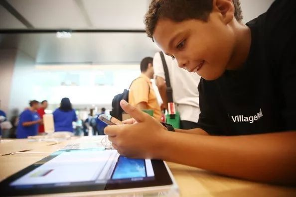
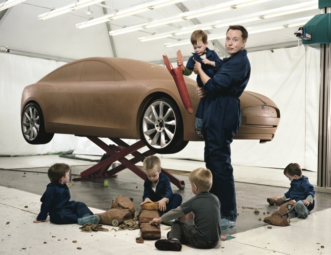
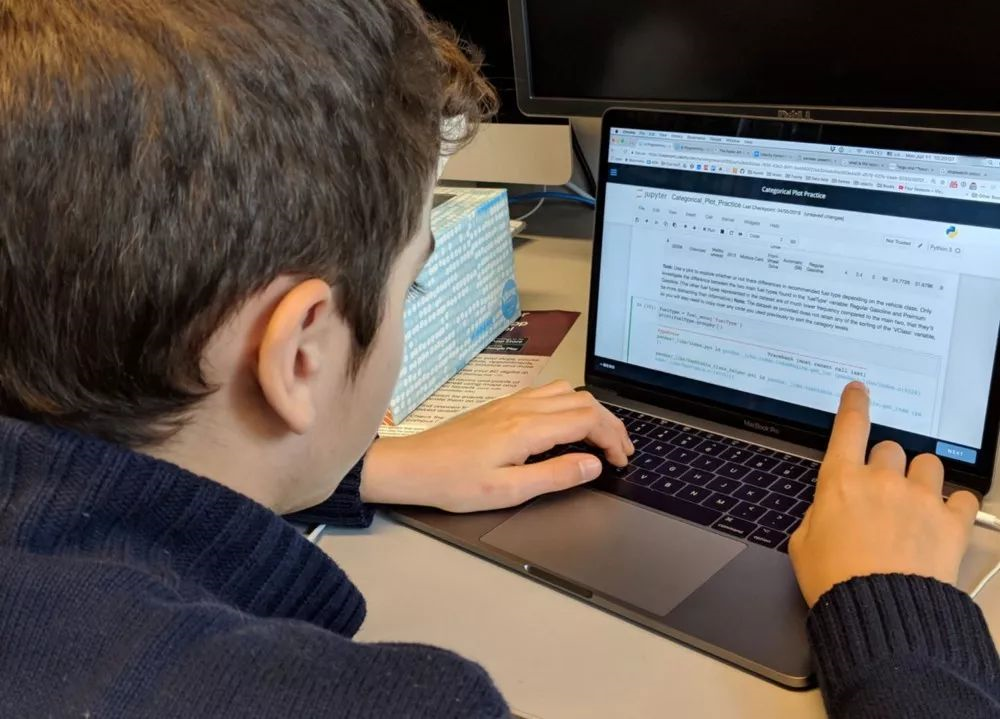
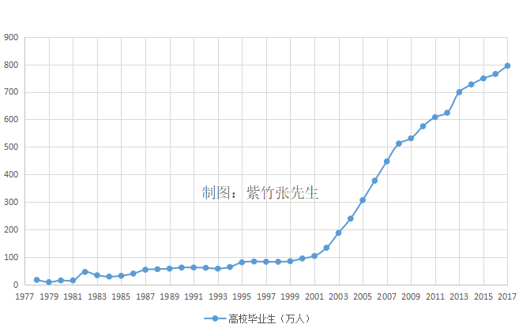

教育选择
看看他们的给孩子的教育选择。

为什么硅谷精英让子女远离科技？
- 已进入第七年的Brightworks正在颠覆教育方法，其做法是让学生全权负责设计自己的学习体验。Brightworks是一所接收各年龄段孩子的私立学校，它的与众不同之处在于没有测验，没有考试或SAT（美国大学入学考试），没有正式的教学大纲，没有学习目标，也没有老师，只有“协作者”。孩子们来到学校，投入完全由自己设计的项目——往往会使用电动工具、电钻、锤子和锯子。
- Brightworks的创始人基弗尔•杜雷(Gever Tulley)：学校应该赋予他们能力，培养终身学习的习惯和好奇心。我很不愿意看到，一提到学校，孩子们眼睛里的光芒就会消失的情景。
- 杜雷的教育模式旨在帮助学生发现他们的内在能力，而不受科技和越来越流行的寓教于乐形式（将基于屏幕的学习与视觉娱乐结合起来的活动）的干扰。“如果他们对某件事感兴趣，我们不会阻拦，但他们必须深入钻研，深入挖掘，”杜雷说。“我们没有那么多规则，但其中一条规则是，如果你想玩视频游戏，你得自己动手设计。”
- 卡琳娜•卡帕拉罗(Karena Capraro)是一名平面设计师，她的丈夫米开朗基罗(Michelangelo)是一名数字体验设计师。他们在儿子奥斯卡(Oscar) 8岁时将他送到了Brightworks。“那时他的学习成绩很好，但未能培养作为一名学习者的能力，”卡琳娜说。“他能给出正确答案，但当我们问得再深入一些，问为什么时，他通常会说，因为他们告诉他那是正确的答案。很多知识都可以通过互联网获取，学校必须开始教我们如何利用这些知识，而不是只是传授知识。”
- Brightworks打破常规的方法，反映了当前困扰教育领域的一系列复杂的紧张局面。许多家长担心，在以人工智能、机器人和互联互通等领域的技术创新为代表所谓的第四次工业革命时代，常规教育未能培养孩子们将会需要的创造性智力。
- 经合组织(OECD)和咨询公司德勤(Deloitte)近期有关未来工作的报告预计，需要学校教授的传统技能的岗位数量将大幅减少，而对具备创造力、情商、创新力和自我决策能力等“新技能”人才的需求将会增加。

「不务正业」的 Elon Musk 开了一所小学
原文摘录：
- 2014 年，因为不满意传统的教学模式，马斯克为他的 5 个儿子创办了这所学校。到现在，这里大约有 40 名学生，其中一半是 SpaceX 的员工子女。
- Ad Astra 确实拆掉了许多传统教育体系的框框条条。这里不以年级区分，7 到 14 岁的孩子混在一起上课，按能力和兴趣来提供个性化的学习内容。这里也不发成绩单，不以分数或等级来判定学生。你可以任性地跳过自己不喜欢的课程。而且每年一换的课程内容，接近一半都是由学生来定的。
- 项目式学习：就像马斯克说的「动手拆发动机」一样，这种方法给学生抛出议题，然后引导他们去主动探索研究。跟坐在教室里被动接收知识相比，它更好地提高了学生的兴趣和参与度。
- 虽然没有分数和等级束缚，但对孩子们来说，学校里的「Seminar」项目有点像是终极考验。这些平均年龄只有 10 岁的孩子，会被带到几百个成年人面前进行演讲。…… 这锻炼的不只是演讲能力，还有他们的心理承受能力。
- 纽约大学的教育研究教授 Diane Ravitch，也很期待马斯克能「改变世界」。她认为，要想真正带来变革，就应该将 Ad Astra 的教育理念和方法渗透到公立学校去。而这件事情完全是马斯克可以促成的。“马斯克应该用他的财富和权力来让公立学校摆脱当下的困境。否则，Ad Astra 只会沦为有钱人的玩具。”
- 校长 Dahn 也有了一个新计划：未来，他会将 Ad Astra 的课程内容开源共享。
Javalover93：
最开始以为这种模式极其少见，但是原文配图图里有“High Tech High 学校，被称为「项目式学习鼻祖学校」”的说明文字。结合第一篇文章里的 Brightworks，我开始猜测，此类教学方法或者类似的教学方法应该较为广泛了。

为什么我 11 岁的儿子说要放弃编程，却又转战 Python
Javalover93：
有趣的真实案例。如何引导激发孩子的学习兴趣，然后为之准备学习材料，并协助学习成长。
原文摘录：
- 事后看来，我认为 Web 开发对于孩子过渡到基于文本的编程不是一个很理想的起点。孩子天生在逆向工程方面很出色，但是现代的 Web 开发中，看到一个你喜欢的网站，然后照样建一个比看起来困难得多。
- 对于尽情玩耍、读书、学校的作业，或有时什么也不做（孩子嘛，偶尔什么也不做也是可以的）来说，学习编程永远是次要的。学习编程需要一种内在的动力，否则就无法坚持下去。这个过程中，我的角色已经发展成了管理、教导和鼓励。
- 一个月后，他完成了第一门课程。在课程结束时，我儿子已经掌握了 Python 的语法、列表、函数、包和 NumPy。
- 我们俩进行了很长一段谈话，但是主要内容是“怎样（How）”。我经常注意到孩子学编程的一个问题是：缺乏上下文环境。
- Scratch 之所以在孩子中间这么流行，不仅是因为它用“连接块”形象地比喻了编程语句，而是因为它的设计仅仅围绕创建和共享故事、游戏以及动画。这很有趣，而且目的明确：即为孩子们带来双赢。
- 我儿子真的很喜欢统计。 2017 年 9 月他完成了网站提供的描述性统计课程，并开始了推理统计学课程。这是一个重要的时刻。这是第一次，他独自闯入了一个超出我的水平的学科领域。
- 对于那些刚开始向孩子介绍编程的父母，请将其视为附加的课外活动。编程不应优先于其他活动，如学校作业、自由玩耍或安安静静做小朋友。
- 就个人而言，我儿子愿意学习编程让我感觉很自豪。我并没有期望他会很快就会成为超级明星程序员。我希望他能够建立新的心理模型，帮助他从不同角度来处理将来的问题。
我为什么放弃了许多人挤破头都要进的一流公立小学
Javalover93:
一份致女儿书，主要还是看看这位父亲的择校考虑和教育想法。
原文摘录：
- 教育最重要的不是教一个人学会什么，而是让他发现自己要什么和不要什么。
- 我希望你不要成为「受害者」。这里的「受害者」是一种心态：把自己的人生归功 / 归咎于别人，让别人为自己负责。
- 人人都是「受害者」。我向写课的人再三确认，他们说这实实在在是大多数人的现状。已经有了丰富的人生阅历和优越的社会地位，却还在作为「受害者」而苦恼着。我说，那他们需要学习的不是方法，首先是价值观。
- 我希望你从上学的第一天开始，就清楚地知道，每一件事都只为自己负责。在这里，你可以自己决定怎样做一件事，承担它的代价和后果，没有什么天生是「必须」的。你负责决定什么重要，成绩的高低重要，还是兴趣重要，这些都由你来判断。老师也很重要，但老师不能替你做决定。老师的角色只是 facilitator。
- 我希望你是一个终身学习者。这需要你从最开始就把学习当作是跟做游戏或社交一样的事来看待。你选择，并为它负责。它包含着一部分需要忍耐的寂寞，但在绝大多数时间里，它可以满足你的趣味和好奇心，以及长远的利益。所以我不希望你是因为大人的要求而学习，那会让你听到「学习」就抵触。…… 我也不想用进度，升学之类的东西给你压力，让你误以为这就是学习的意义。
- 我还有一件非常确定的事，那就是知识更新的速度越来越快，你在学校学到的知识，未来大部分都用不到。重点在于学习本身。所以我不看重你学了什么，学得好不好，我在意的是你怎么学，你如何看待学习，你为什么而学。
- 学习的过程，也是认识自己的过程。我希望你理解并接受自己的独特性，而不是迷失于与别人的同化或相互比较。你当然是与别人不一样的。
- 缺点是要用一种平和的，客观的心态来观察的，熟悉它们会在什么情况下造成影响，并且知道如何恰如其分地应用。
- 很多事情你想做就能做到，方法很简单，只要说一声「我要」，再为它采取行动就可以了。正视自己的愿望，为它负责。这会是你在这所学校最核心的体验。
- 我认为，决定一个人过怎样的生活，活得好不好，最重要的因素就在这里：你在多大程度上，敢于大声说出「我要」，就这么简单的两个字。
- 我把这种特点称为「大气」。愿意去表达和争取，相信自己配得上一切想要的，美好的事物，并敢于承担一切挑战。无关能力积累，而是一种胆识和气魄，这是人格中最有生命力的部分。比起优秀来说，我更希望你大气。
两个德国外教的离开，甩了中国教育一记响亮的耳光！
原文摘录：
- 西洛特：“我一辈子也无法在中国看到真正的教育！”
- 这些教育的功能只是为了应付试卷上的标准答案，别无用处，大多数学生的学习目标也是短暂的——为了考试。
- 与此同时，人性教育、逻辑教育却是空白。
- 中国教育的扭曲还体现在安全教育方面。很多学校实行的是无缝对接管理，从学生进门到出校门，每一分每一秒都有老师看着，下一个老师不到，上一个老师不能离开。就像看管羊圈一样。
- 中国教育是把人最珍贵的年华付给毫无意义、毫无发展价值的学习内容上。而舍不得花费一点时间去讨论和思考。记忆成了学习的唯一方法，高压成了教育的唯一手段，保护成了成长的唯一措施。
- 卢安克实践着这样一个理念：爱和陪伴，比所谓的教育更重要。让孩子体验生命本身的美好，比“灌输知识”更重要。
- 卢安克对待孩子的方式，更像是一种陪伴，而不是教导。对此，卢安克说：“孩子们最需要看到的是，‘有一个人，他在作为真实的自己。在陪伴着我的时候，他忘掉了所有的想法，仅仅保留着真实的自己。’”
- 他曾经跟现实世界里的问题较着劲。但现在，他不想改变了，“如果带着改变的目的去做事，那就不用去做了。我不想改变，也就没有压力。”
- “改变不是目的，也不是我的责任，但改变会自然发生。”
- “人生中不存在任何必须的事情，只存在不必要的期待。没有任何期待和面子的人生是最美好的、自由的，因为这样，人才能听到自己的心。”
- 如果他们能学会创建自己的东西，他们到城市的时候，也不用觉得“别人那么有钱，我没有，我被抛弃了”，“他可以自己创建，他不需要逃。”
- 在卢安克看来，纪律可以带来秩序，但那是被动的，只有一个人归属于一个事情，一群人，一个社会，才会有认同，才会有发自内心去照顾它的愿望。
- 生命中真正的乐趣，是当你沉潜于某一事物，完全忘我的刹那。它触发的是人内心中最为单纯的欲望，就像童年时的我们，总是对这个世界充满了单纯的好奇，觉得生活中处处充满新鲜和美好。

中国只有3%的人具有本科学历，还有3000万人穷的超乎想象
原文摘录：
- 中国大学教育的二大转折点，分别是77年恢复高考和99年大学扩招。
- 大城市的孩子绝大部分，都能上大学，这已经不能称之为考大学了，只能称之为高等继续教育。
- 从恢复高考以来，40年累计毕业的大学生，总共是9577万人，其中三本以上占一半，专科生占一半，也就是说，本科生有4800万人左右。
- 看起来的确是很多，但是中国的人口总共是13亿人，本科生占据总人口的比例是3.69%，换句话说，只要你是本科生，你就碾压了97%的中国人。
- 从3%的人口占比来看，本科生很金贵，从这几年每年毕业接近800万人，人才市场不堪重负来看，本科生很廉价，这里面体现的，是中国巨大的贫富差距，和中国太穷的历史欠账。
- 中国年收入低于2300元的贫困人口，前几年有上亿人，这几年扶贫缩减了很多很多，但是还有3000万人。
- 记者对孩子的母亲说：尽量让孩子少吃这些油炸的速食垃圾食品。孩子的母亲说“没关系，不经常吃。但是每年都会给孩子煮一次，因为今天是孩子的生日，其实我们根本舍不得吃”。
- 为什么北上深和纽约一样繁华，人均GDP不亚于欧洲列强，但是整个中国的人均GDP依然上不去，直接被甩到全球一百多名，正是因为这样的贫困人口太多了。
- 小工，日薪通常是200~300元，很多人折算一下，月薪真的上万啊，但是实际上，这些人是接到活才有活干，接不到活就没活干，月收入完全没有保障，也没有五险一金，建筑工地也是类似，基本都是按天算钱，没有给你包月算钱的，出一天工给你算一天钱，干完这个工地就要找另外的工地接活，在工地上干，单日价明显就比街头自己揽活的人要低，因为工地给的出勤天数要多，要稳定，不需要你自己出去揽活，但是也不是你天天能干活的，要是下雨或者你生病，你就没有出勤的机会了。
- 本科生的确不值钱，但是没有你想象的那么不值钱，中国的确富裕了，但是也没有你想象的那么富裕，这一切都是因为我们仅仅改革开放了40年，还有很多的历史包袱没有甩掉，贫富差距极大，时间可以改变一切，但是在没有改变之前，我们不能盲目自大，要尊重现实。